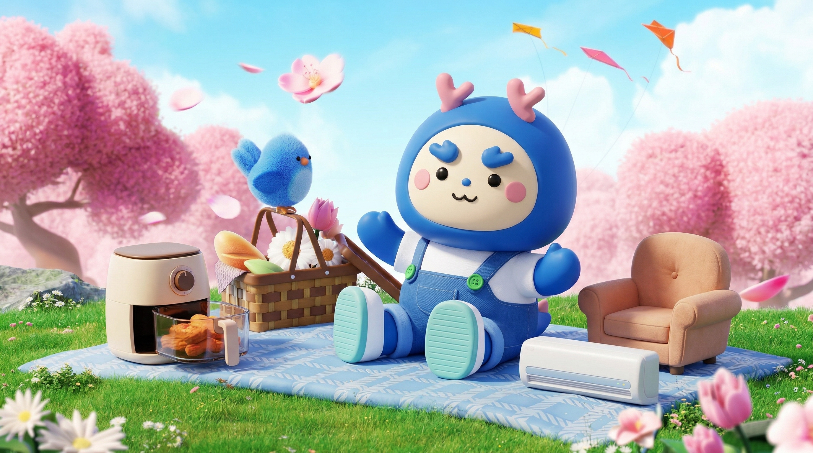
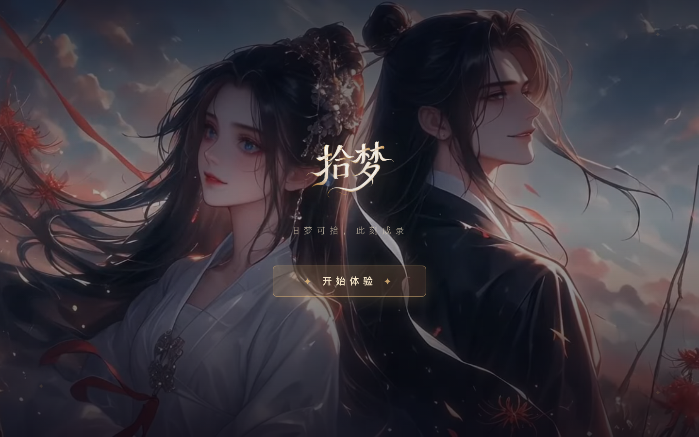

01
产品主导力
独立主导 3 个 AI 产品从 0 到 1,覆盖 AIGC 工具 / 私域 Agent / 内容平台 三个方向。完整输出竞品分析、PRD、用户流程、商业模式与数据指标体系。
视觉传达本科出身,3 年设计经验打底,现在以 AI 产品经理 为主要方向。 独立做过一年农产品直播电商,跑完选品、供应链、直播、私域全链路 —— 这段经历让我第一次以经营者视角理解「需求」,不是功能清单,是真实的业务卡点。
独立主导 3 个 AI 产品从 0 到 1,覆盖 AIGC 工具 / 私域 Agent / 内容平台 三个方向。完整输出竞品分析、PRD、用户流程、商业模式与数据指标体系。
做过 SD+ControlNet+LoRA、通义万相、Gemini 多模态横评,从 IP 一致性、姿态稳定性、多图融合等维度拍板技术路线 —— 而不是跟风选型。
独立做过一年农产品直播电商,一人身兼选品 / 直播 / 私域。从卖货人变成产品人,对"哪些场景真的需要 AI"有更硬的判断。

产品负责人 · 红星美凯龙(北京)
在无专项预算、无上级指派条件下主动识别 3D IP 素材生产瓶颈。独立完成 SD+ControlNet+LoRA / 通义万相 / Gemini 多模态 三方案横评,拍板 ComfyUI 标准化 AIGC 工作流, 扩展完整 KV 合成与多尺寸导出模块,打包为本地软件供团队复用。

AI 形象 × 同人故事 · 沉浸式内容平台
产品负责人 · 团队项目
将 AI 形象生成 + AI 同人故事创作融合为沉浸式体验,切入古风 IP 爱好者"代入感"需求的空白地带。 输出完整 PRD 覆盖 6 大模块、主/异常流程与非功能性需求,设计 6 层核心转化漏斗。
那红富士还挺不错的
老张~ 之前那箱红富士都吃完啦?最近到了今年头茬脆枣,脆甜脆甜的,想着你上次提过喜欢脆口的,给你留了两箱~
农产品私域复购运营链路
独立产品设计 · 个人项目
从做农产品直播电商时的私域瓶颈里长出来 —— 不是一个"话术生成器", 是一条 客户档案 → 场景识别 → 话术生成 → 复购追踪 的完整链路。 V1.0 PRD、竞品分析、Prompt 工程、三阶段迭代路线均已完成。
自主创业
独立跑完选品、供应链、直播、商品视觉、私域运营全链路。 第一次以经营者视角理解用户需求与商业运转逻辑 —— 这段经历直接驱动了后续「熟客」私域复购链路的产品设计。
红星美凯龙(北京)
在无预算、无指派条件下主动识别 3D IP 素材生产瓶颈,独立完成三方案技术横评, 搭建 ComfyUI 标准化 AIGC 工作流。同期负责商场全年 20+ 活动节点视觉设计与落地, 独立主导北京时光音乐节视觉全案。
酷我音乐
负责功能歌单 Banner 日常设计。针对高频出图需求主动搭建模块化素材库系统, 将 Banner 拆解为标题、底色、主视觉、排版四层可复用模块,出图时效从 30 分钟压缩至 10 分钟。
以 ComfyUI 为中枢的 AIGC 标准化工作流,把 3D IP 素材从外包依赖变成团队自有能力。
红星美凯龙「凯凯龙」IP 每年需在 20+ 活动节点产出不同风格的 3D 海报、KV 与周边素材。 传统外包链路成本高、周期长达 3-7 天、且风格不统一 —— 是一个看得见但无人处理的业务瓶颈。
在 无专项预算、无上级指派 的前提下,自下而上推动。从设计师视角识别痛点, 以产品经理视角定义解决路径,以创业者视角拍板资源投入 —— 独立完成从需求发现到项目落地的完整闭环。
识别业务痛点比掌握技术更难。设计师视角让我看见流程里的卡点,产品经理视角让我定义可落地的方案, 创业者视角让我敢于在没有资源的前提下推动变化 —— 这套复合视角是 AI 时代 PM 的核心竞争力。
AI 形象 × AI 同人故事 —— 切入古风 IP「代入感」空白地带的沉浸式内容平台。
古风 IP(《狐妖小红娘》《天官赐福》等)的死忠群体不再满足于被动消费官方内容, 他们想「我就是其中的角色」。现有同人创作门槛高(需绘画/写作能力),AI 降低门槛后存在明显市场空白。
以 AI 形象生成 + AI 同人故事创作 双引擎,构建沉浸式古风世界观内容生产平台。 用户不是读者,也不是作者 —— 是自己 IP 世界里的主角。
古风世界观下的角色形象自定义
基于 IP 世界观的分支剧情生成
角色/场景/设定结构化数据
评论、二创、角色扮演
订阅、打赏、专属剧情
优质二创曝光与分成
落地 → 试用 → 注册 → 首次创作 → 分享 → 付费。每层都有独立的引导文案、埋点与转化节点设计。 漏斗驱动 PRD 覆盖主流程 + 异常流程 + 非功能性需求共 6 大模块。
农产品私域复购运营链路 —— 把「一次成交」变成「长期熟客」。
2025 年我独立做了一年农产品直播电商。一个人跑完选品、供应链、直播、客服、 复购提醒、私域运营全链路。最深的痛点是 —— 同一套话术要对不同客户手动改发, 效率极低、转化不稳、人脑记不住 300+ 客户的口味偏好。 所以熟客不是一个"话术生成器" —— 谁都能生成话术 —— 它是一条 客户档案 → 场景识别 → 话术生成 → 复购追踪 的完整链路。
豆包、DeepSeek 等通用 AI 助手在这个场景有 4 个核心局限:
熟客的切入点:垂直场景深度优化 + 极简交互。不正面打通用 AI,通过场景化 Prompt 工程降低使用门槛。
个人或小团队农产品直播电商经营者 —— 微信私域沉淀客户、无专职运营、一人身兼多职、客户量 50 人以内。 三大核心场景:
老客户周期性唤醒,每人历史、口味不同
精准匹配客户偏好,避免群发机械感
批量但有温度,人情味是转化关键
「填空式表单 + AI 生成」 极简交互:
路线不是从技术出发,是从一线能力边界倒推的。V1.0 不以打败通用 AI 为目标, 通过场景 Prompt 优化降低使用门槛,做小而垂直的一块;差异化壁垒 —— 客户档案 + 企微链路 —— 放在 V2、V3 逐步建立。先把最小核心价值跑通,再谈链路完整性。
李泽旭的 AI 助手，关于他的项目、经历、能力匹配，都可以问我。